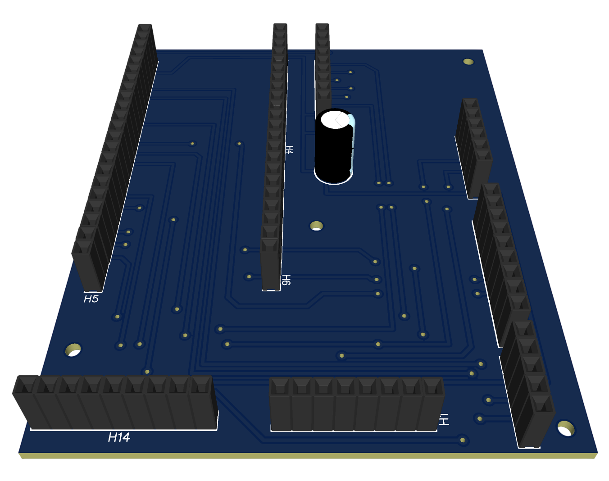
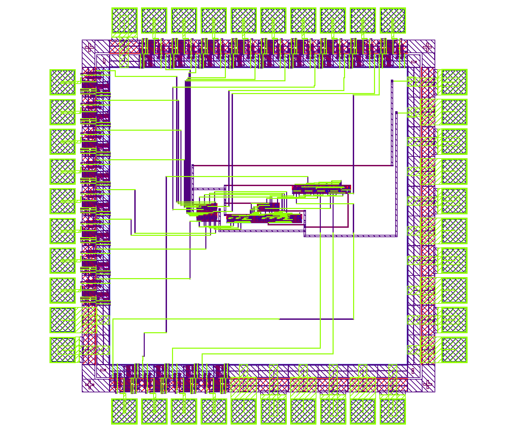

Electrical Engineer
Turning Ideas Into Silicon.
Working toward transistor and chip-level design.
Selected Work
Projects.

PCB Design
Cansat Flight Computer PCB
Plug-and-play flight computer board for a can-sized satellite system.
Open project
PCB Design
Low Voltage Disconnect PCB
Battery protection circuit that prevents over-discharge through load disconnection.
Open project
VLSI / Layout
MIPS8 Processor
Full-custom VLSI implementation of an 8-bit MIPS-compatible processor.
Open project
ASIC
Similarity Detector
Hardware-accelerated vector similarity detection in a custom ASIC.
Open projectMe
Building custom silicon.
Electrical Engineer focused on Integrated Circuit Design, VLSI, and computer architecture. Working toward transistor and chip-level design.
I'm an open-source enthusiast. I believe meaningful progress happens when people build together and share their knowledge.
Technical Focus
Technical Focus.
VLSI & Chip Design
Integrated circuits, transistor-level design, layout, and verification.
PCB Development
Practical boards built around debugging, reliability, and fast iteration.
Computer Architecture
Processor design, instruction set development, datapath organization, and digital systems.
Skills & Tools
Tools I use.
Currently Building
Silicio-16.
A custom 16-bit CPU architecture designed from ISA to FPGA implementation.
In progressContact